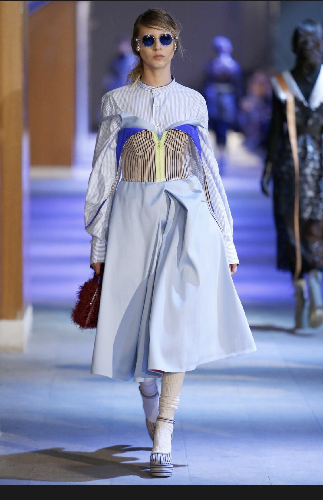
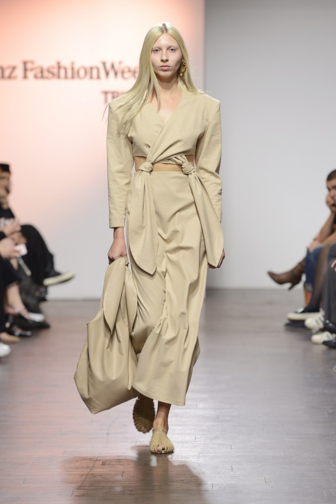
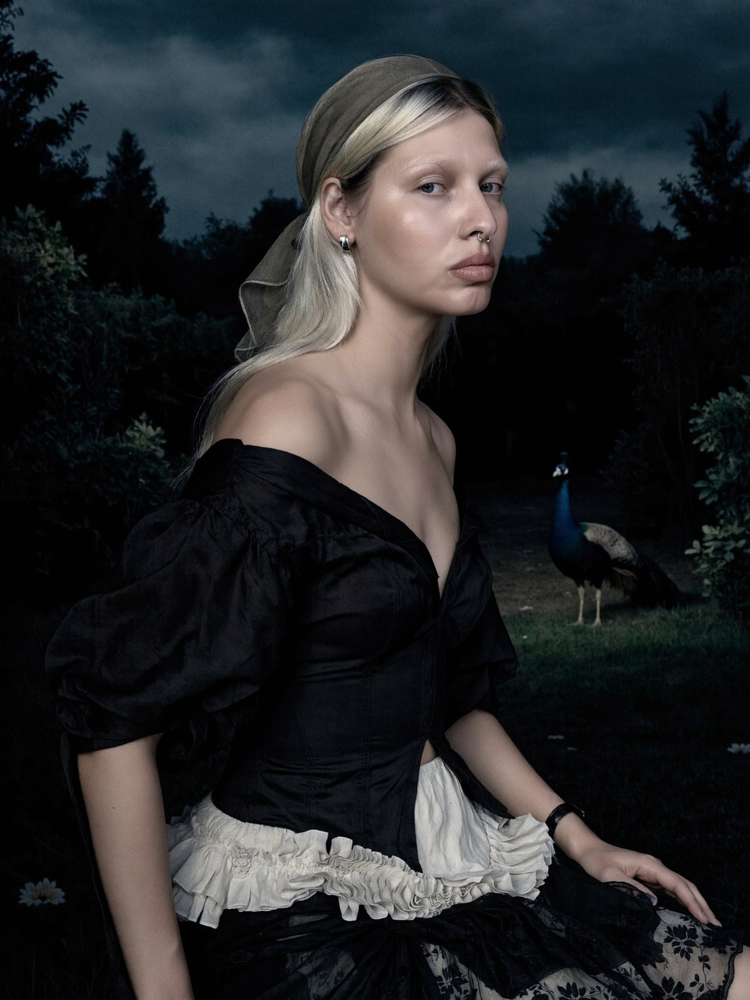

Everything here was made without a camera.
MISBHV
I don't shoot.
I direct.
Twelve years inside the fashion industry — on the runway, in front of the camera, and behind it. I've modelled in Paris, Milan and Asia, produced shoots, managed brands and helped put shows together. I know how a picture is made, because I've been every person on the set.
Now I make it alone. The camera is a neural network, the studio fits in a laptop, and the only limit is the idea. Product, catalog, campaign, fashion film, animation, character shoots — for brands, musicians and people who want a picture nobody else has.
Showreel


Fashion since 2013
Runway, editorial, campaigns and street style — before the camera became a neural network. I know what a garment looks like when it moves, because I was the one moving in it. That's why my AI models don't look like mannequins.
Work
About
Twelve years in fashion — runway, editorial, campaigns, street style. Vogue, Models.com, i-D, Dazed, WWD and the street-style photographers who kept finding me.
About

I don't shoot. I direct.
One person, one laptop, the whole crew.
A shoot used to take three months before the first frame: casting, location scouting, moodboards, a team of ten, a studio booked for a day, then weeks of selects, retouching and post. A campaign could run three days on set; a film, far longer. Now I can build the same picture from anywhere in the world, alone, in a fraction of the time — and the quality doesn't drop. That is the most exciting thing that has happened to this industry in my lifetime.
I didn't arrive from nowhere.
I've been a model for over a decade, produced shoots, staged runway shows, coordinated stylists, makeup artists and models, held a camera, cut video. I know how a picture is made because I've stood on every side of it. The neural network is new. The eye is not.
Your DNA first. Mine where it fits.
Some brands want pure execution to a brief — that's a normal job, and I do it. Some give me total freedom — that's a gift, and the result will carry my handwriting. Most want both: their colours, their grading, their world kept intact, with my point of view inside it. I ask before I assume. It's your brand; I want you to love it.
No idols. Everything is a reference.
I don't worship anyone. I take from music, paintings, cities, strangers on the street, other artists' work — and even then, not all of it. The same person can make something that moves me and something that doesn't, because every work comes from a different moment of a life. That's how it should be.
I do this because I enjoy it.
That's the whole answer.
About
Why I do this
2013
My first modelling contract took me to Shanghai. Then Milan, Paris, Istanbul — fashion weeks, campaigns, editorials, street style. For years, Paris was somewhere I kept going back to.
The other side of the set
Along the way I stopped being only the person in the picture. I produced shoots, staged runway shows, worked as brand manager for a jewellery house, took a clothing brand to showrooms in Tallinn and Milan, ran art direction and marketing. Every role taught me a different piece of how an image gets made — and how it gets sold.
2025
I'd been watching neural networks for a long time before I touched them. When I did, everything I'd learned from a decade on set suddenly had a new instrument. The first projects were tests. Then brands started writing.
Now
I'm an artist. Product, campaign, film, animation, characters — whatever the picture needs to be, I build it.